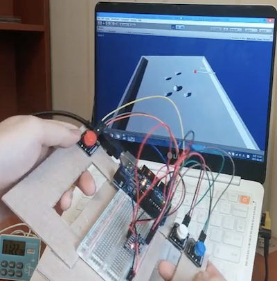
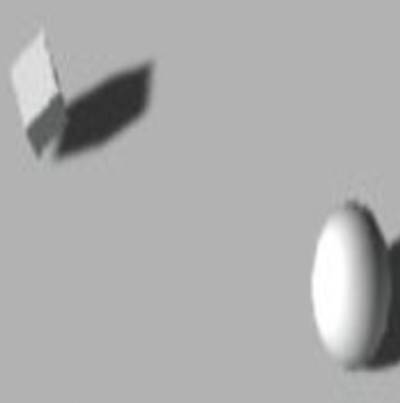
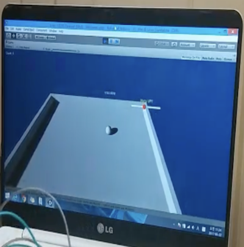

Implemented Functions
|  |
A function to Control a Ball You can control the ball by tilting the controller. |

|
A function to Change Point of View You can switch the viewpoint by pressing a button within the controller. Press the red button to turn counterclockwise, press the blue button to turn clockwise, and press the white button to return to the original position. |
|  |
A function to Vanish Item Boxes When the ball approaches the box, the box disappears. |
|  |
A function to Decide Victory or Defeat You win by clearing all the boxes within the time limit. |
Background and Purpose
In an introductory computer system class, there was a task to make a work with Arduino. It was created to make the most creative work possible.
In an introductory computer system class, there was a task to make a work with Arduino. It was created to make the most creative work possible.
What I Learned
- I learned how to link Arduino and Unity programs.
- I learned how to use buttons and tilt sensors.
- I learned how to design and implement hardware with Arduino
Process
- I implemented a mockup of a game controller using boxes and tapes appropriately before programming the Arduino.
- I bought a tilt sensor and 3 big buttons and attached them to my game controller mockup.
- I worked on linking Arduino and Unity, but this was the most difficult. So, after a long time, I found an example of interworking with each other on Google, and I tried to run it somehow by matching the serial port.
- I modified programs to link the existing Unity-based ball rolling game with the C/C++-based Arduino program by referring to examples that link with each other.
- In this way, I was able to implement the program I wanted.
A thing to have Done my Best to Strengthen my Abilities
Creating creative works with Arduino and linking with Unity
Creating creative works with Arduino and linking with Unity
Overall Structure

Used Skills
Arduino, Unity
Arduino, Unity
Development Environment
Arduino IDE, Unity
Arduino IDE, Unity
Further Explanations
- I improved the assignments I did in the ‘Computer Graphics’ class for my major and submitted it as a final assignment for my major, ‘Introduction to Computer Systems’.
- Post
- Source Code